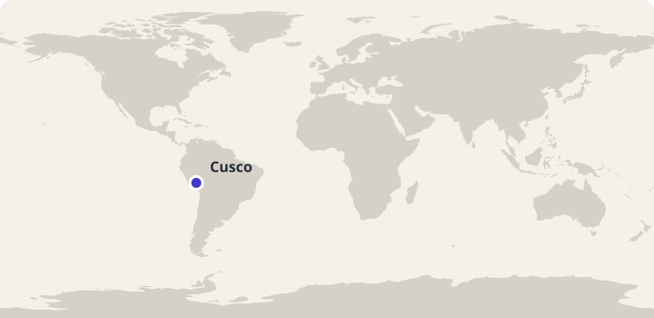
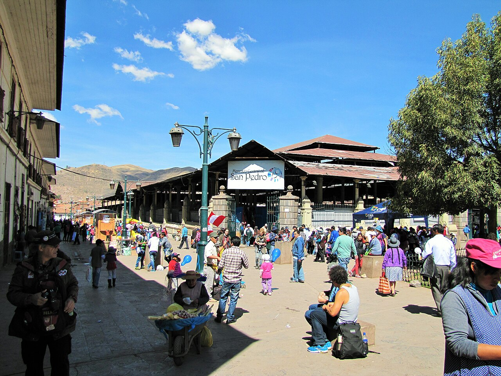
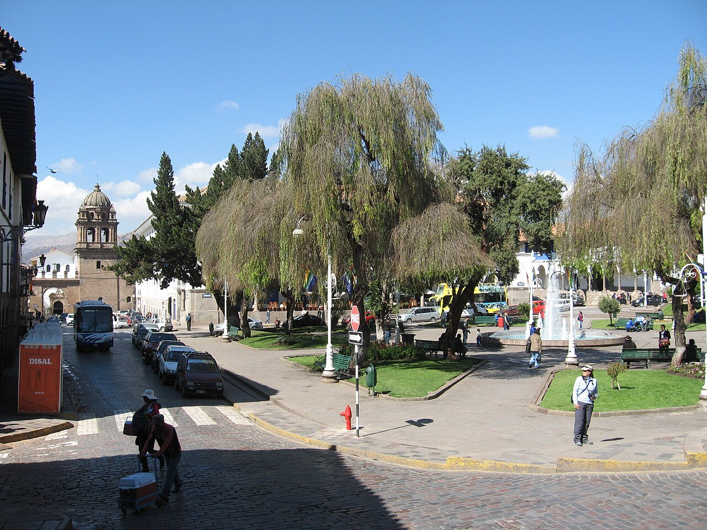

Arbeidsutkast · til lærervurdering
45 minutter · les, oversett og sammenlign
Peru: Un día en Cusco
En morgen med Mateo: poteter, språk og et levende marked.
Bli med Mateo gjennom en dag i Cusco. Les høyt og oversett muntlig i par. Svar på spørsmålene, snakk om hverdagslivet og øv på ordene fra teksten. Mateo og familien er fiktive; stedene og kulturinnslagene bygger på kildene nedenfor.

Cusco i Peru. Kartgrunnlag: Natural Earth. Markøren viser byens omtrentlige plassering.
Les og oversett i par
- Les teksten høyt sammen. Bytt på å lese ett avsnitt hver.
- Oversett ett avsnitt om gangen muntlig til norsk. Pek eller trykk på understrekede ord når dere trenger hjelp.
- Hjelp hverandre med ord og setninger dere er usikre på.
Pek eller trykk på understrekede ord i teksten for å se norsk oversettelse. Numrene i bildene viser bildeord.
Sør-Amerika · Andesfjellene
Un día en Cusco

Bildet kunne ikke lastes. Du kan fortsatt lese teksten og bruke ordoppslagene.
Om bildet
Cusco San Pedro Market 1.jpgDato: 2014Nedskalert av Commons; ikke beskåret. Nummererte ordpunkter lagt over bildet.
- el mercado markedet
- el árbol treet
- la farola gatelykten
Mateo, y en Cusco, una ciudad de . Desde algunas calles . y llevo . Hoy y a San Pedro. Ella . Yo tengo una lista con para .
Dentro del mercado hay muchos . Vemos fruta, pan, maíz, y de . En Perú se usa la palabra para . papas de varios y colores. pregunta que quiere preparar. Yo y aprendo que .


Compramos papas y unas . Después un puesto de . Hay y con muchos colores. mira una bufanda y conversa con la persona que . Yo con la bolsa. Me gusta escuchar cómo puede una conversación sobre y los materiales.
En la región de Cusco español y también . Mi abuela conoce palabras en y algunas. todas las conversaciones, pero puedo preguntar . Para mí, aprender una palabra nueva es una forma de otra persona. También que una ciudad tiene .
caminamos . Vemos edificios antiguos, visitantes y personas que . Cusco tiene una historia importante , pero hoy es también una ciudad donde la gente estudia, compra y . a una amiga. ellas hablan, en la mochila el cuaderno donde palabras nuevas.
y . cocina y yo . con un amigo. Antes, a mi hermano el dibujo de una pequeña y otra grande. Él y pregunta por qué dibujo comida. : «Porque hoy el mercado es ».
Faktakilder: Perú Travel: Mercado San Pedro · UNESCO: City of Cuzco · Ministerio de Cultura del Perú: Quechuas. Vis til teksten når du begrunner svarene.
Spørsmål til teksten
Velg ett svar på hvert spørsmål.
Utforsk kultur
Sammenlign og spør
- På hvilke måter ligner Mateos innkjøp på innkjøp på et sted du kjenner?
- Hvordan viser teksten både Cuscos historie og dagens hverdagsliv?
- På hvilke måter kan et marked være et sted å lære?
- Hva ville du spurt Mateo om mat eller språk i Cusco?
Åpne spørsmål har flere rimelige svar. Lytt til partnerens begrunnelse.
Bruk språket i par
Velg to ting du kan se i fotografiet. Beskriv dem på spansk, og la partneren finne det du beskriver.
Se bildetPrøv en utvidelse
Gi et kort råd til en som skal besøke Cusco.
Ord du kan bruke videre
Øv på de ti ordene fra teksten. Prøv å huske svaret før du snur kortet.
Lær Peru-gloseneValgfritt glosesett: Peru: Un día en Cusco. Kom tilbake og repeter ordene. I glosemodus vises det når ordene er klare for repetisjon.
Se de ti ordene
| Spansk | Norsk |
|---|---|
| la papa | potet |
| el maíz | mais |
| la bufanda | skjerf |
| la bolsa | pose |
| la montaña | fjell |
| cocinar | å lage mat |
| preguntar | å spørre |
| aprender | å lære |
| grande | stor |
| pequeño/pequeña | liten |
Dekk den spanske kolonnen. Si ordet før du sjekker. Bytt deretter retning og øv på ordene du er usikker på.
| Spansk | Norsk |
|---|---|
| la papa | potet |
| el maíz | mais |
| la bufanda | skjerf |
| la bolsa | pose |
| la montaña | fjell |
| cocinar | å lage mat |
| preguntar | å spørre |
| aprender | å lære |
| grande | stor |
| pequeño/pequeña | liten |